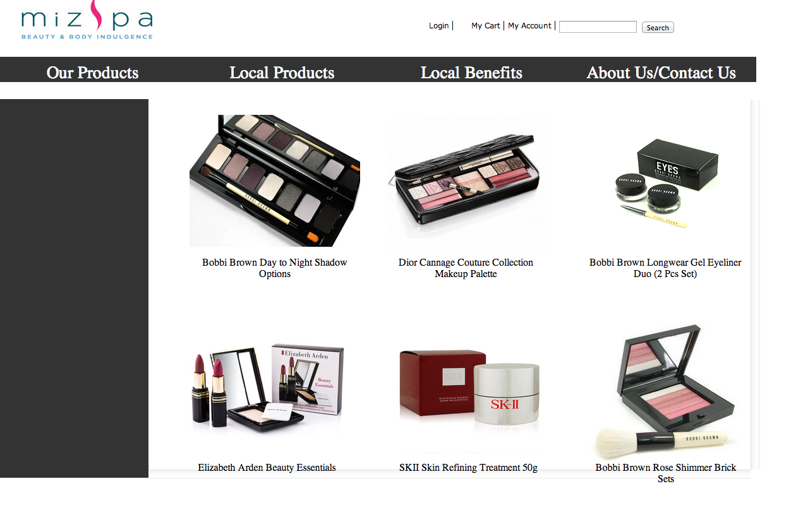

To evaluate the the project, we'll begin with looking back at our sucess criteria and objectives.
1. To email the client
2. Create flowcharts
3. Create a wirefarame for the website
4. Make the homepage on dreamveaver
5. Have slideshow
6. Have a log-in box
7. Have 2 languages -English and Chinese
8. Give a trust worthy look-Using good colors, classsic look, proffeciency
1. Email the client
2. Have a slideshow of the famous products on the hompeage
3. Make the hompeage
4. Create flowcharts
5. Create wireframes
While making the website, we made sure that our objectives and sucess criterias to be fulfilled according to what the client wants. There were quite few
aspects of the website that we thought we could've done better. Here are some of the examples of the things can change or added.

What I thought could've been fixed or made better was the search button and the other litle ones next to it.
Yes we did reach the objectives of this specific task and we have it on our page as well but becuase it isn't functioning, it's basically
of no use.
I thought that our entire website was more of a "demo website" than an actual full one.We only had 6 pictures on each page and the varietyof products weren't used. We didnt't have enough information about the individual products that were placed on each page. for example, if we clicked on the product, not all of them had information for the viewers to see and know enough about the product.
I think the look of the website was quite accurately achieved. Our goal was to give the website the professional look that the client was looking for.
I think that our webiste could've been better in a lot of ways.
1) adding more apges to it
2) Having more information about the company and the products
3) We Should've consulted the client more to get good feedback
4) The variety of products or contents was to small
5) We could've made the "log in" and 'add to cart" work.
I think we were given good amount of time to finish it up, what I thought was annoying was that we had to record every little step we took towards
the project and this distracted us from making the website or in fact limited the amount of time we had, to work on the website pages.
-Here are some of the comments we get when somebody looks at it without clicking anything on anything.
1) Wow, it looks pretty professional.
2)So that's your homepage?
3)So you used dark colors to give it the professional look.
-Here are some of the comments we get when people start using it.
1) Wait. It's kinda weird because I can't search.
2) Oh so I can't add to cart either.
3) Not every picture is clickable Sumayya.
So overall, the website looks good, bu there are quite a few things we could've changed and made it better in terms of using it.